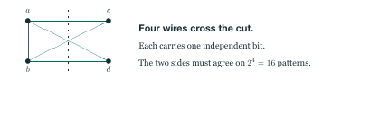

VP versus VNP over every field: A scientific review of Anthropic's paper and Lean formalization
What the release establishes
Assessment. Anthropic has released a formal proof of the standard separation of Valiant's algebraic complexity classes, $\mathsf{VP}$ and $\mathsf{VNP}$ [1], over every field [2, 3]. The exceptional feature is the circuit model: the lower bound allows arbitrary depth, reuse of intermediate values, arbitrary field constants, and cancellation. I compared the headline definitions [4] with Valiant's model [1] and checked the public verification log for the exact revision [5]. Both Lean and an independently implemented kernel (nanoda) accepted the five exported theorems [5, 6]. I found no mismatch in the headline statement. I checked the formal statements and the recorded run. An independent reconstruction of the entire argument would supply a further level of evidence.
Earlier superpolynomial bounds included breakthroughs for constant-depth circuits [7]. Here the depth can grow with the input, so a circuit cannot escape the bound by adding more layers [3, 7].
A sign changes the problem
For a two-by-two matrix, the determinant is $ad-bc$ and the permanent is $ad+bc$. For larger matrices both contain a term for each permutation. The determinant has polynomial-size circuits despite its factorial number of terms. Counting terms alone therefore cannot explain the difficulty of the permanent. The theorem says that, outside characteristic two, every arithmetic circuit for the permanent eventually exceeds every fixed polynomial size [3, 4]. In characteristic two, $-1=1$, and the permanent equals the determinant. The Hamiltonian cycle polynomial, which sums just the terms for permutations consisting of one cycle through all vertices, supplies the hard family in that characteristic as well [1, 3].
How large is the lower bound?
Write $m$ for the matrix dimension, so there are $m^2$ variables. For some absolute $c>0$, every circuit in the theorem has more than $$ m^{c(\log_2 m)^{1/3}}=2^{c(\log_2 m)^{4/3}} $$ gates for every sufficiently large $m$ [3, 4]. The threshold may depend on the characteristic and is uniform among fields of that characteristic. The exact proof supplies $c=1/1600^2$ [3, 8]. For any fixed power $m^d$, its exponent $d$ is eventually overtaken by $c(\log_2 m)^{1/3}$. This is a superpolynomial, quasipolynomial-scale lower bound. The gap to the known $2^{O(m)}$ upper bounds remains substantial, and the theorem supplies little guidance on the difficulty of a matrix of a given practical size.
Why geometry enters an arithmetic circuit proof
The difficulty is to say something true of every small circuit, even one that shares work among many gates and cancels large intermediate expressions. The proof replaces the permanent or Hamiltonian cycle polynomial with auxiliary polynomials each can express efficiently by substitution [3]. A small circuit for the target would give a small circuit for the auxiliary polynomial. Which auxiliary polynomial yields a contradiction depends on a geometric property of tensors over the field [3].
From rank to distance. Imagine several sites joined by wires, with a shared index at the two ends of each wire. A tensor records which local choices at the sites agree. A spectral point assigns a number to such a tensor, respecting products and bounding sums of restrictions. For a wire of dimension $q$ from $u$ to $v$, its value is $q^{d(u,v)}$. Taking logarithms turns a product of wires into a sum of lengths. Low rank across a cut then gives an upper bound on the length by routing through two intermediate sites. The geometry matters because a circuit with $L$ gates yields a sum of pieces, each of rank at most $L$ across its own balanced cut. A bound on one chosen cut would leave the circuit free to use different cuts for different pieces [3].
The flat case. Here these distances can approximate any finite Euclidean configuration after rescaling. The paper places a complete graph's wire ends and the intermediate sites for all balanced cuts in one configuration. The complete graph has many wires across every balanced cut. The length inequalities therefore force $\log_2 L$ to grow at least on the order of $\ell k^{3/2}$, with $k$ sites and $\ell$ bits per wire in the parameter range used. Taking $k=r^2$ and $\ell=100r$ makes the logarithm of the target matrix dimension of order $r^3$, while the required log circuit size is at least of order $r^4$. Eliminating $r$ gives the power $4/3$ in the theorem [3, 8].
A small check of the picture. I enumerated all 64 one-bit edge assignments of the complete graph on four vertices. For each of its three two-against-two cuts, the coefficient matrix had rank 16 over the two-element field. Four edges cross each cut, so their four bits give 16 independent patterns. This verifies the wire interpretation in one instance. The simultaneous control of decompositions across different cuts is the additional mathematical work [3].

The second branch and the scope of the result
What if the required Euclidean configurations are unavailable? The paper derives a nonpositive-curvature inequality from an identity for two crossing wires. A compactness and rigidity argument shows that failure of a specified strict contraction forces the flat geometry [3, 8]. Thus at least one branch applies. The proof leaves open which branch applies over the reals. Both yield the headline bound, so selecting a branch for that field is unnecessary [3].
The contracting case. A geometric inequality now gives algebraic identities that reroute tensor networks into sums of tree-shaped networks. Trees can be cut into small pieces. A hypothetical small circuit for the hard polynomial would evaluate weighted sums over the accepting runs of a universal machine fast enough to accelerate the evaluation of those pieces. The delicate point is nonuniformity: the original circuit may contain a great deal of advice in its wiring and field constants. Diagonalizing immediately would overlook that advice. The proof moves named constants outside sums, bootstraps the speedup to larger scales, and specializes to a finite field. A program evaluating itself would then have a value $V$ satisfying $V=1+V$, impossible in a field. This branch obtains a stronger lower bound of the form $2^{\Omega((\log m)^2/\log\log m)}$. The common guarantee uses the exponent from the flat branch [3, 8].
From hard polynomials to classes. $\mathsf{VP}$ consists of polynomial families of polynomially bounded variable count and degree that have polynomial-size circuits [1, 4]. $\mathsf{VNP}$ allows summation of a $\mathsf{VP}$ polynomial over polynomially many witness bits, hence exponentially many assignments [1, 4]. The release proves that the Hamiltonian cycle family belongs to $\mathsf{VNP}$ over each field [6, 8]. Its circuit lower bound defeats every proposed $\mathsf{VP}$ exponent. The all-fields argument transfers a putative circuit for an integer-coefficient target to an algebraic closure of the prime field in the same characteristic, preserving gate count. This explains why even arbitrary constants from a larger field do not evade the conclusion [3, 8].
Border complexity. The bound survives even when constants are formal Laurent series in $\varepsilon$ and the output need only equal $f+\varepsilon g$ with regular coefficients in $g$ [3, 4]. Intermediate poles may cancel. This permits more circuits and yields $\mathsf{VNP}\not\subseteq\overline{\mathsf{VP}}$ under the release's definition [4, 6]. An exact lower bound alone would leave this possibility open. Appendix N adapts both branches to control the approximation [3, 8]. Numerical estimates at sampled inputs are a different question.
How much confidence does the evidence warrant?
Statement audit. The public definitions make formal polynomial identity the success criterion [4]. Over the two-element field, $x^2-x$ vanishes on every field element and still has nonzero formal coefficients. A Boolean computation can exploit such identities on its input domain. The decomposition and low-degree evaluation steps in this proof examine the polynomials at the gates themselves. This gives a concrete reason that the release settles an algebraic separation while leaving the Boolean $\mathsf{P}$ versus $\mathsf{NP}$ question untouched [2, 3]. Although Computes imposes no degree bound on intermediate gates, Strassen homogenization preserves polynomial circuit size whenever the output polynomial has polynomial degree, so the class separation matches Valiant's standard $\mathsf{VP} \subsetneq \mathsf{VNP}$. Counting input and constant gates changes the size convention only by a constant factor for a binary circuit after dead gates are discarded [3, 4].
Machine evidence. I examined repository revision 11b6c7e3c927, the five configured theorem names, and the project-specific GitHub Actions log [5, 6]. The November 23 run records a successful build, export of all five targets, acceptance by nanoda and Lean's default kernel, and a comparator pass [5]. The permitted axioms are propositional extensionality, quotient soundness, and classical choice [6]. A full static scan across all 324 .lean files (72,932 lines) found sorry exclusively in Challenge.lean (five target placeholders) and zero occurrences of custom metaprogramming or axiom-injection directives (admit, axiom, native_decide, implemented_by, extern, unsafe, opaque, run_tac, addDecl). The kernel record carries substantially more weight than this textual check. I inspected the remote run and did not rerun the kernels locally [5].
Where review can add the most. Appendix Q identifies differences between the written and formal arguments [3]. Four statements in the contracting branch — Proposition I.1, Theorem H.2(d,e), Theorem J.3, and Proposition N.4 — describe machines and programs whose correctness is verified only in the Lean development rather than proved in full on paper [3]. In Lemma K.3 the Lean development proves the properties needed of the computation-encoding polynomial, while its identity with the full printed sum over words is a separate claim [3, 8]. Remark N.6, the consequence for border determinantal complexity, is given as a mathematical deduction outside the formalized results [3]. None of these points changes the type of the exported separation theorem, though they matter to a reader reconstructing the proof on paper. The most informative independent reconstruction would test the balanced-cut comparison and the management of arbitrary advice in the diagonal argument, where the two branches respectively get their strength [3, 8].
Verdict. The evidence supports accepting the claimed formal separation in Valiant's usual circuit model [1, 4, 5]. The kernels check derivability. The comparison with Valiant's definitions identifies which problem the proof resolves. Anthropic attributes discovery to an internal Claude model and says that, at release, no human mathematician had checked the proof [2]. The attribution comes from the authors. The verification log records proof acceptance [5].
References
- L. G. Valiant, Completeness classes in algebra, Proceedings of the Eleventh Annual ACM Symposium on Theory of Computing (STOC 1979), 249–261,
https://doi.org/10.1145/800135.804419. - Anthropic, VP != VNP: release README and authorship statement (commit
11b6c7e3c927df2658f513b6b68ea7f8929c62c5),https://github.com/anthropics/formal-math/blob/11b6c7e3c927df2658f513b6b68ea7f8929c62c5/vp-vnp/README.md(2026). - Claude (Anthropic), VP $\neq$ VNP Over Every Field, 70 pp.,
https://raw.githubusercontent.com/anthropics/formal-math/11b6c7e3c927df2658f513b6b68ea7f8929c62c5/vp-vnp/paper.pdfandhttps://www.alphaxiv.org/abs/2611.vp-vnp-arithmetic-lower-bounds(2026). - Anthropic, Public formal definitions and theorem statements (
vp-vnp/Statement.lean, 98 lines),https://github.com/anthropics/formal-math/blob/11b6c7e3c927df2658f513b6b68ea7f8929c62c5/vp-vnp/Statement.lean(2026). - Anthropic, Dual-kernel GitHub Actions verification log (
nanoda+ Lean 4comparator, run45272623486/ job138036167794),https://github.com/anthropics/formal-math/actions/runs/45272623486/job/138036167794(2026). - Anthropic, Exported theorem bindings and comparator configuration (
vp-vnp/Solution.leanandvp-vnp/comparator.json),https://github.com/anthropics/formal-math/blob/11b6c7e3c927df2658f513b6b68ea7f8929c62c5/vp-vnp/Solution.lean(2026). - N. Limaye, S. Srinivasan, and S. Tavenas, Superpolynomial lower bounds against low-depth algebraic circuits, Electronic Colloquium on Computational Complexity (ECCC), Report TR21-081 (2021),
https://eccc.weizmann.ac.il/report/2021/081/download/. - Anthropic, Paper-correspondence Lean modules (
vp-vnp/Paper/*.lean:Fields.lean,Rate.lean,Alternative.lean,NoAcc.lean,Transfer.lean,Approximate.lean,CircuitPhi.lean),https://github.com/anthropics/formal-math/tree/11b6c7e3c927df2658f513b6b68ea7f8929c62c5/vp-vnp/Paper(2026).